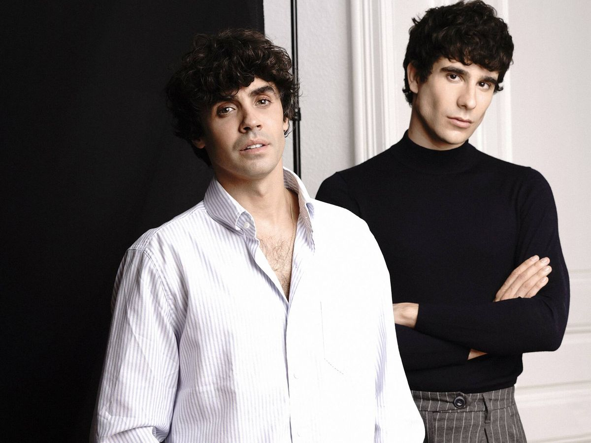

La Llamada
Dirigida por Javier Ambrossi y Javier Calvo
La llamada es una película española de 2017 perteneciente al género musical, escrita y dirigida por
Javier Ambrossi y Javier Calvo, conocidos popularmente como los Javis, y protagonizada por
Macarena García, Anna Castillo, Belén Cuesta y Gracia Olayo. Se trata de una adaptación
cinematográfica de la obra teatral homónima de 2013, ganadora de trece premios BroadwayWorld,
entre otros galardones.

Trailer
Ver Trailer
Ver Trailer
Sinopsis
Leer Sinopsis
Leer Sinopsis
Protagonistas
Conoce a los personajes
Conoce a los personajes
Entradas
Comprar
Comprar
1h 49m
No recomendada a menores de 12 años
Trae a un acompañante y tendreis Palomitas gratis
Si vienes con 5 amigos tendreis de regalo la camiseta del campamento Brújula.
Sobre la Llamada
El largometraje narra la historia de María y Susana, dos chicas de diecisiete
años que se encuentran en el campamento de verano cristiano La Brújula, al que van desde siempre.
Ambas sienten pasión por el reguetón y el electro latino, pero las apariciones de Dios a María
comenzarán a transformar sus vidas.
Los realizadores enarbolaron una trama emocionante y melancólica, aderezada con un humor surrealista y alocado. Entre las divertidas coreografías y las canciones que componen la banda sonora,la película defiende la libertad individual, el respeto a las opciones vitales de cada persona y la importancia de ser una misma, además de transmitir el mensaje de que nunca es tarde para que alguien descubra su camino en la vida, se lance a perseguir sus sueños y se entregue a quien ama sin prejuicios ni miedos.
El rodaje transcurrió durante siete semanas en el campamento Alto del León, situado en el municipio segoviano de El Espinar, y comenzó el 29 de agosto de 2016 para poder contar con las condiciones climatológicas idóneas. También se llevó a cabo una parte de la grabación en Alcalá de Henares
Los realizadores enarbolaron una trama emocionante y melancólica, aderezada con un humor surrealista y alocado. Entre las divertidas coreografías y las canciones que componen la banda sonora,la película defiende la libertad individual, el respeto a las opciones vitales de cada persona y la importancia de ser una misma, además de transmitir el mensaje de que nunca es tarde para que alguien descubra su camino en la vida, se lance a perseguir sus sueños y se entregue a quien ama sin prejuicios ni miedos.
El rodaje transcurrió durante siete semanas en el campamento Alto del León, situado en el municipio segoviano de El Espinar, y comenzó el 29 de agosto de 2016 para poder contar con las condiciones climatológicas idóneas. También se llevó a cabo una parte de la grabación en Alcalá de Henares
Directores y protagonistas

Javier Calvo y Javier Ambrossi lanzan Suma Content, su nueva productora independiente
Macarena García, la luz de 'La Llamada'
No haría otro personaje en 'La llamada', Susana está dentro de mí
Bienvenido al Campamento Brújula
Vas a vivir una experiencia completa con el pack CornPop